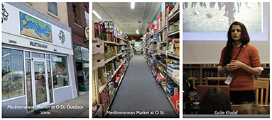

A Crowdsourcing News Platform for Minority Racial Groups
~ Widad Akrawi, Kurdish health expert and human rights activist, Founder, "Save The Yazidis: The World Has To Act Now"
It was an early May afternoon, Hasan Khalil was busy in his hair salon attending to a client from Nebraska City. Every week, he has tens of people visiting him from nearby towns and cities.
Hasan started his venture Golden Scissor, a barbershop and nail salon, at Holdrege, Lincoln, in 2014. But before Midwest, he had a long journey that started in the Middle East — Iraq. Hasan Khalil was one of the many persecuted Yazidis.
In the mid-1990s, when he was 14 years old, Hasan’s family took refuge in Virginia and later in the Buffalo, New York. From the wide-open farm fields to crowded multi-generational households, from a close-knit community to only a few known faces, like many Yazidi refugees in top-tier American cities, Hasan found his way through isolation to one that of assimilation. Even before he set for Nebraska, he had made a name for himself in New York City as a salonist.
The community, says, Hasan. When his family shifted to Nebraska in 2010, Lincoln was already home to 500 Yazidi refugees. With a large section of Yazidis moving to the USA and thereby to Nebraska in 2014, the population rapidly increased to over 3000.
Hasan speculates it is more than 4000, making Lincoln the largest Yazidi settlement in the USA and Canada. Further, the Yazidis who were earlier settled in other states in the USA are choosing to move to Nebraska.
Talking about Nebraska’s business environment, Hasan says,
Hasan recalls the support provided by the Mayor’s office during the lockdown and isolation phases of the COVID-19 pandemic.
He remarks it is not only the city or state administration but the people of Nebraska who support small businesses.
Many of the new Yazidi immigrants have successfully set up small businesses ranging from car dealerships, grocery stores, barber shops, vape and smoke shops, liquor stores. To Hasan’s knowledge, Lincoln alone has more than 20 Yazidi-run small businesses.
A few blocks away from Hasan, is the Mediterranean Market. Gulie Khalaf is managing the family business while her brother is visiting Iraq. Gulie grew up in Syria before moving to New York City in her teenage. Being a nerd, she earned a straight-A, despite surviving the abject poverty of immigrant life.
Like many other Yazidi families, her family moved to Nebraska as well in the 2000s. Gulie went on to become a Language Arts teacher and later an activist for Yazidi International.
She talks about large sections of Yazidis moving to Nebraska from other states like Arizona, Atlanta, California, Colorado, New Jersey, and New York. The refugee settlement office in Nebraska facilitated a large number of people from the Yazidi community to settle in the state compared to other places, Gulie asserts.
This community network is further helping the people to promote their services through word of mouth.
As she continues to balance her time between teaching, managing business, and online activism, Gulie talks about how living in Nebraska is supporting the community in the aftermath of the genocide. She calls it a blessing for her people.
The thought is echoed by Hasan, who often plays Yazidi music in local events.
Hasan hopes to bring together more Yazidi immigrants to develop the community while increasingly integrating with the other communities.
In his message to new Yazidi immigrants, Hasan emphasizes the non-judgmental character of Lincoln regardless of the diversity of the people, the presence of a large and flourishing community, good facilities provided by the state, and the abundance of jobs.